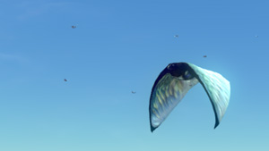

Your Survival PDA has been updated with enhanced aquatic mobility solutions, and other essential improvements.
CONTROLLER
Here's the situation, people. 37 minutes ago we lost contact with the Aurora. Until every last crewmember is home safe or confirmed dead we are going to do whatever it takes to improve their chances.
ANALYST
We just learned the planet's surface is 97% water. That means we need improved submersibles, diving gear, pressure compensation equipment...
CONTROLLER
And we have a limited window to flash them the data. You all know what to do.
Please familiarize yourself with this short instructional video.
The New Improved Seamoth
The Seamoth is a one-person submersible with independent power systems. Originally designed for industrial mining operations, it has been repurposed for use in survival situations, and product upgrades have expanded its functionality.
Seamoth Upgrade Suite Available
The Seamoth can now be customized with up to 4 different, stackable upgrades, manufactured using the Seamoth Upgrade Console, which has been added to your database.
Seamoth Upgrade Access Panel
The most pivotal enhancement is the wing-mounted access point which enables pilots to install upgrade modules to customize their submersible for their particular needs.
Seamoth Chassis Improvements
The Seamoth chassis has been made lighter and more aerodynamic, enabling pilots to breach the water and remain airborne for longer.
WARNING: Seamoth Crush Depth
With the enhancements made to the Seamoth, minor structural vulnerabilities were introduced. Without further upgrades the Seamoth is not rated for depths greater than 225 metres.
Seamoth Storage Solution
A 4x4 storage locker fixable to the main hull or to the wings, designed for survivors who must travel great distances to acquire necessary resources.
Power Efficiency Upgrade
This upgrade recycles some of the heat by-product generated by the engine to minimise inefficiencies. Each module reduces power use by 15%.
Pressure Compensator
The Seamoth chassis is now built from a smart metal with an adaptable atomic structure which hardens exponentially under programmed conditions. The Pressure Compensator triggers the reaction under extreme atmospheric pressures, and increases safe depth by 200m.
Hull Reinforcement
This upgrade also utilizes the Seamoth's smart-metal hull to reinforce structural integrity, but focuses on collision detection and pre-emptive chassis hardening. Guaranteed to withstand all collisions at normal speeds.
Sonar

A dedicated system for detecting and displaying topographical data on the HUD. Recommended for scouting difficult terrain and identifying cave entrances.
Perimeter Defense System
A short range, short duration electrical field designed to ward off aggressive fauna.
Torpedo System
A standard underwater payload delivery system adapted to fire non-lethal Vortex Torpedoes.
Solar Charger
Converts UV and visible light into electric charge for the Seamoth's onboard power cell.
CONTROLLER
What do we know about the local ecosystem?
ANALYST
Too far for accurate biomass readings, but conditions could support aquatic lifeforms.
CONTROLLER
Ship them the Defense System and the Vortex Torpedoes.
ANALYST
But ma'am, weapon designs violate Directive 7!
CONTROLLER
Directive 7 is there to reduce the risk of survivors turning on one another. If they're going fin-to-fin with alien krakens then I want them prepared, and damn the directives!
Vortex Torpedoes in Detail
The payload utilizes gravity distortion technology to generate a vortex which pulls objects towards it before flinging them away. Torpedoes can be constructed at the Seamoth Upgrade Console.
Perimeter Defense System in Detail
When triggered this upgrade draws power from the Seamoth's main battery to generate a powerful electric field in the immediate vicinity. Unlikely to cause serious harm to larger organisms, it is nonetheless an effective emergency deterrent.
Seamoth Upgrade Console Available
This console may now be constructed in the Moonpool, and used to manage the new Seamoth features. It is equipped with a specialised fabricator for building Seamoth Upgrades, in addition to a console for customizing vehicle name and color.
ANALYST
Ma'am, the Submersible team is asking whether the color customization options are survival-essential. What should I tell them?
CONTROLLER
Tell them if it takes more time to cut it than leave it they shouldn't be wasting time asking stupid questions!
Terraformer Blueprint Updated
Previous versions of the terraformer were based on the basic flashlight design. This oversight has been corrected.
New Fauna Detected
New Airborne Species: Skyray
{kind=link}
The Skyray exhibits some aesthetic and behavioural similarities to the Rabbitray, but all other evidence indicates their genes diverged long ago.
New Aquatic Predator: Biter
{kind=link}
Biters are a small, four-eyed aquatic species with two rows of sharp, needle-like teeth. Their size prohibits them from presenting a serious threat to larger creatures on their own, but in a school they will focus their attention on a single individual and feed until there is nothing left.
New Biome Detected: Mountainous Region
Massive lifesigns detected. Elevated land detected. Cave system detected.
{kind=link}
{kind=link}
{kind=link}
PDA Operating System Updated
Creative Mode has been provided for users to safely field test construction features. In this simulation mode you may build any structure at zero cost, and you cannot die.
The tooltip information your PDA provides on items and samples in your possession now contains more actionable detail.
N.B. The PDA is not a replacement for common sense. If you do not look after yourself your performance will suffer. Be vigilant for signs of malnutrition, such as vomiting, dehydration and the slow healing of wounds.
Get development updates
Sign up to the Subnautica development mailing list! Receive a newsletter when Subnautica receives an update like this one.